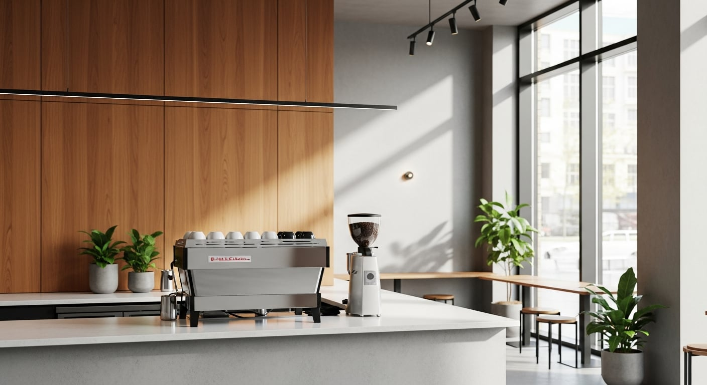
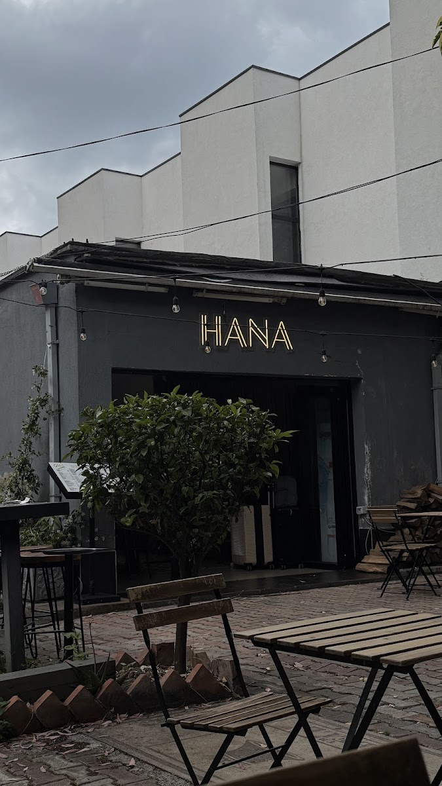
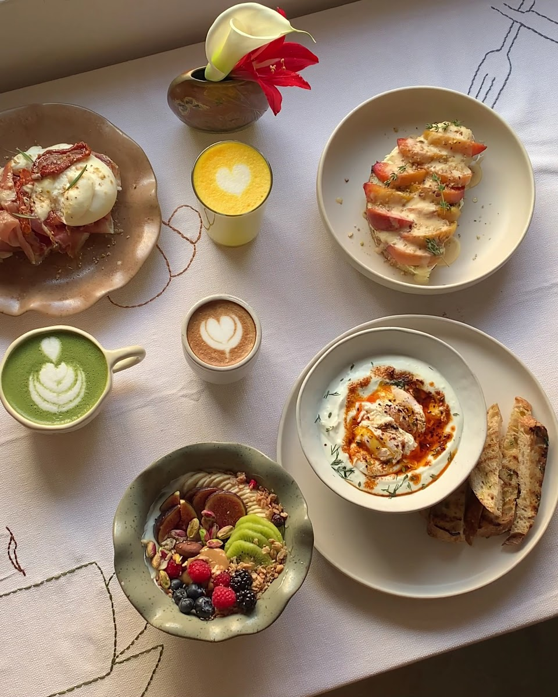
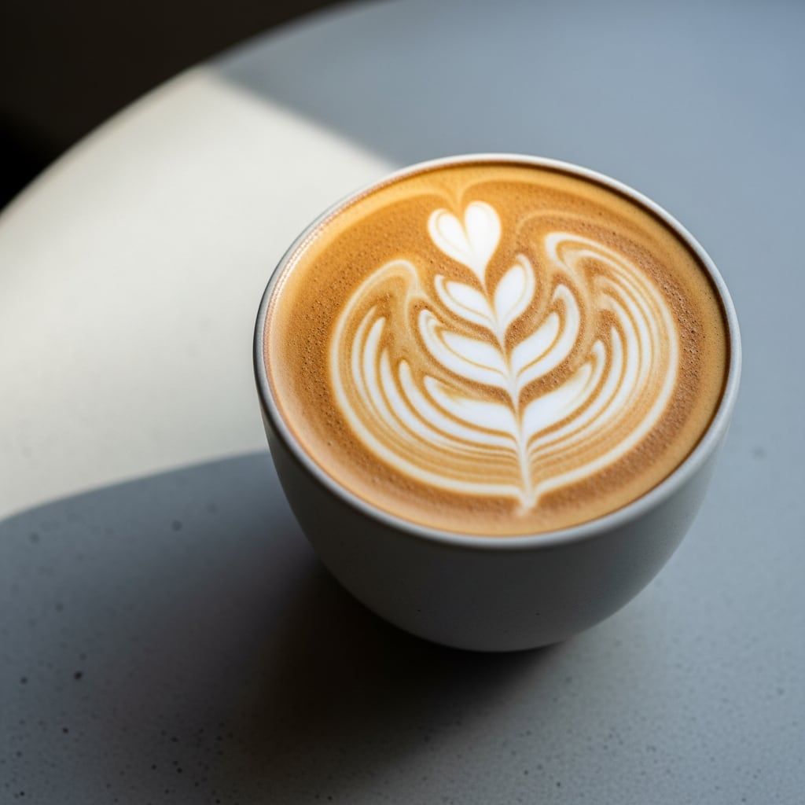
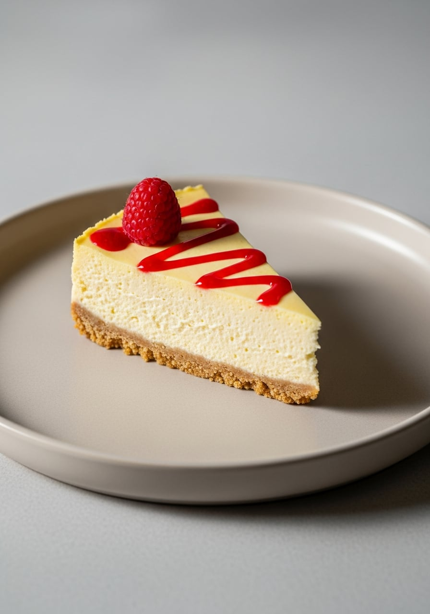
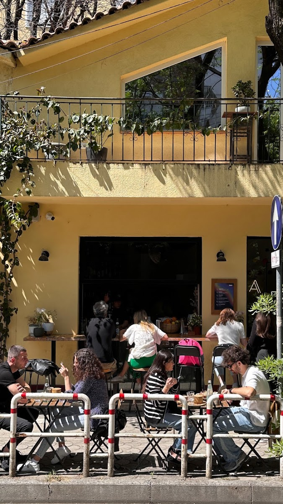

Kafe e zgjedhur
Specialty coffee e pjekur për shije të pastër, e bërë nga njerëz që e duan vërtet.

HANA hapi dyert në 2022, kur Uarda Begaj u kthye nga Berlini me një ide të thjeshtë: një cep ku kafja bëhet me kohë dhe njerëzit ndalen pa nxitim. Filxhanët janë specialty, të zgjedhur kokërr për kokërr dhe të pjekur për shijen e tyre të pastër.
Brunchi ndryshon sipas sezonit, ëmbëlsirat vegane dhe pa gluten dalin të freskëta nga kuzhina, dhe terraca pranë Bllokut mbushet me të njëjtat fytyra mëngjes pas mëngjesi. Pak vende të mbajnë gjatë. HANA është një prej tyre.
Specialty coffee e pjekur për shije të pastër, e bërë nga njerëz që e duan vërtet.
Pjata sezonale, përbërës të freskët dhe një menu që ndryshon me kohën.
Ëmbëlsira vegane dhe pa gluten, që askush të mos rrijë mënjanë tavolinës.

Te Rruga Gjin Bue Shpata, pak hapa nga Blloku, fasada me neon HANA është bërë pikë takimi. Tavolinat e jashtme mbushen herët, dielli zë terracën, dhe kafja vjen ngadalë.
Si të na gjesh



Cepi ynë është gjithmonë i hapur për një mëngjes të ngadaltë. Na gjen pranë Bllokut, ose na shkruaj në Instagram për menynë e ditës.